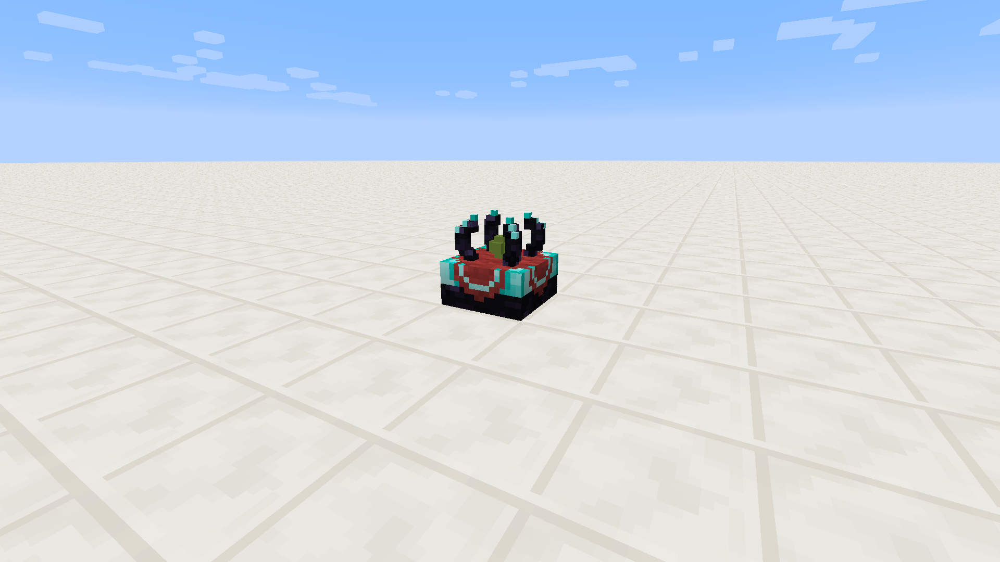

One of the first thing I wanted from my Chunk Loaders was for them to start loading automatically. As soon as I figured out how Forge's chunk loading system even worked, I took the time to figure out how I could port some of it to work with Java's serialization.
If you don't know what that is, don't worry about it. This is what you need to know: Chunk Loaders get added to a list when placed, and removed when broken. Each time the list is modified, it's outputted to a file called "PersistentBits.dat" in your world folder.
Do not delete this. If your chunk loaders aren't working right, chances are this file has become corrupt (a rare occurrence) - but no worries! Just delete the .dat file, and re-place all of your loaders!
